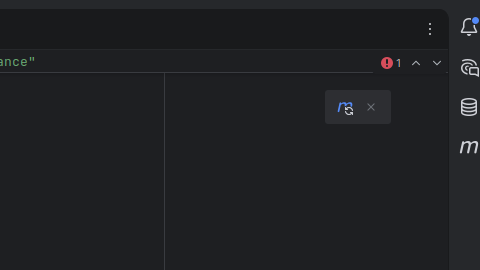

Adicionando Dependências com Maven
- Acessar o site MVN Repository Link=>
- Pesquisar a dependência: Ex.: Jackson Databind
- Escolher a versão em: Latest Versions
-
Copiar o XML
<dependency> <groupId>tools.jackson.core</groupId> <artifactId>jackson-databind</artifactId> <version>3.1.0</version> <scope>compile</scope> </dependency> - Abrir o pom.xml do projeto
- Colar em <dependencies> o código
-
Clicar no botão localizado no canto superior direito, para atualizar as dependências

Botão para Atualizar as dependências